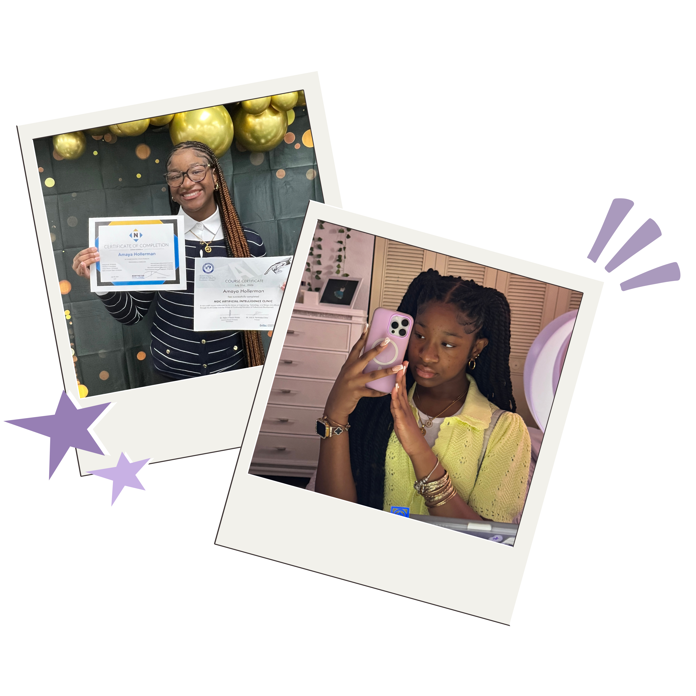
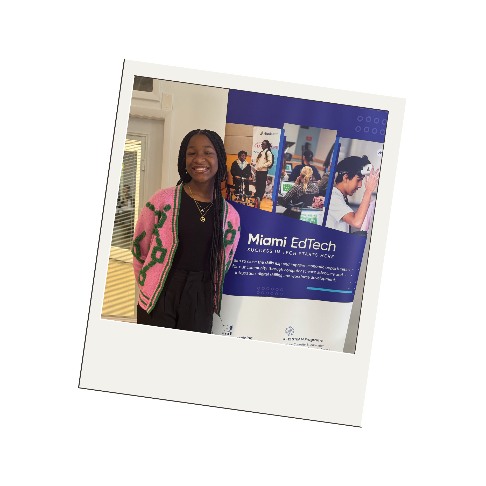
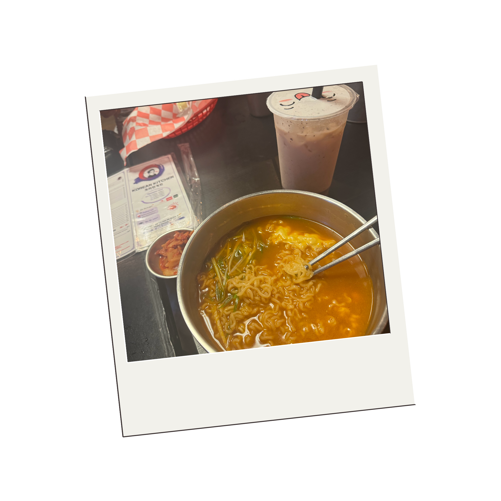
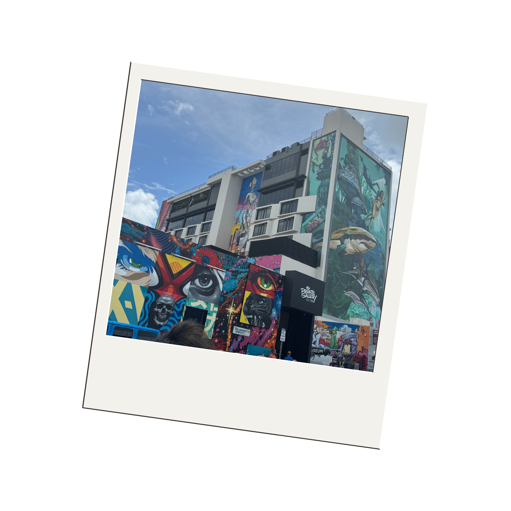
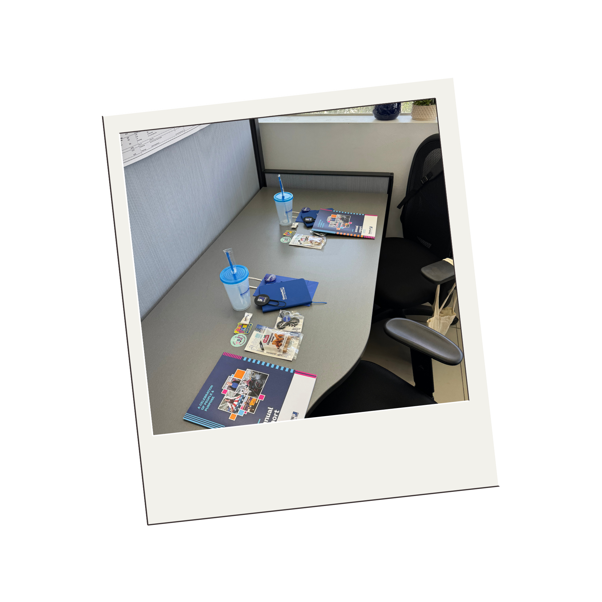
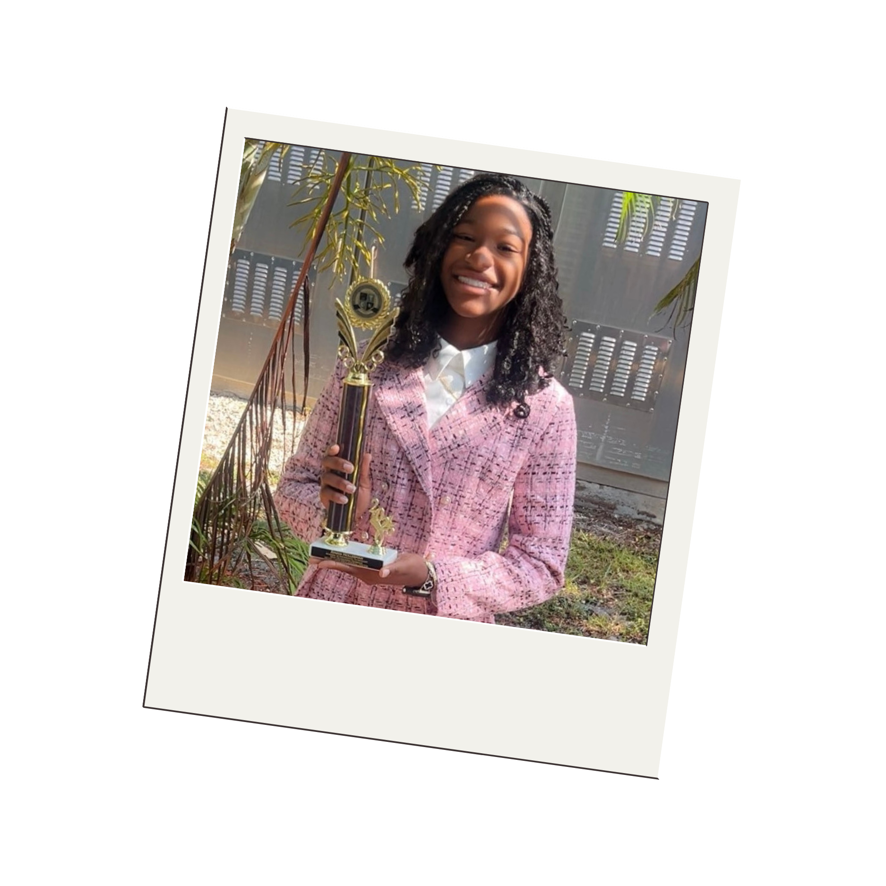
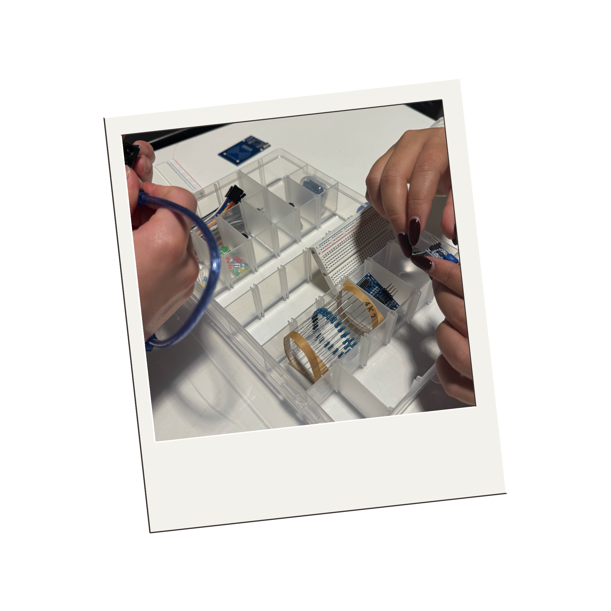
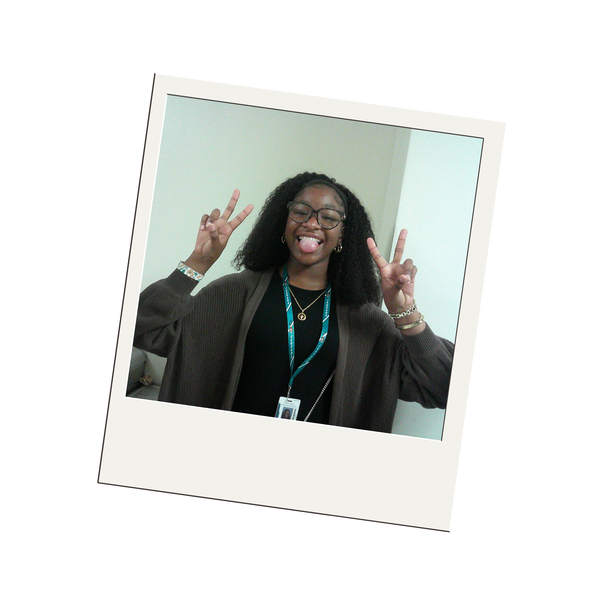
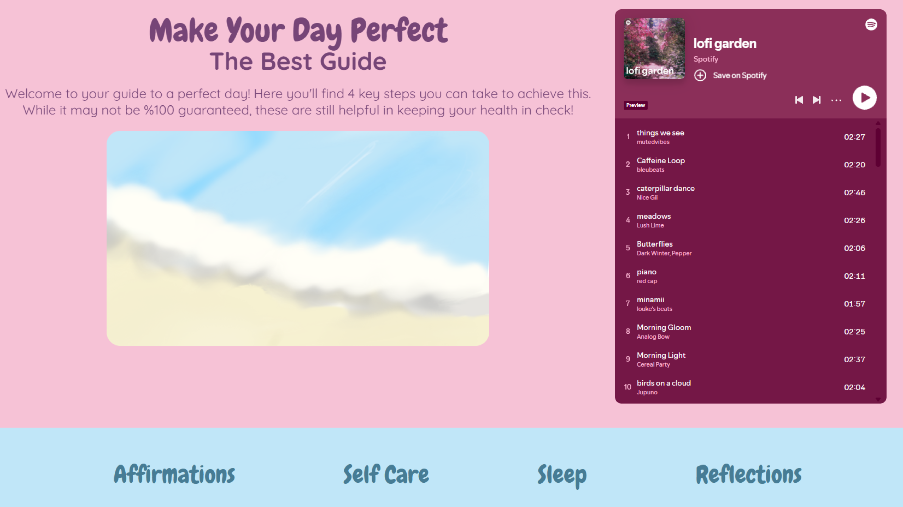

Hello cool person! My name is Amaya and I'm an aspiring Computer/Software engineer. A few things about myself is I grew up in Miami, FL, I am currently in my Junior year of highschool, I am under the Information Technology Academy, I absolutely love the color purple, and I attend dance classes as my hobby. Im glad to have you on my self-built project portfolio.
I built this site to have all my projects under one place, all coded and built by me! Practicing my coding languages, learning new ones, and staying active is important for my journey as an engineer!
Going through my Junior year as a full-time highschool student and part-time college student, I am still committed to expanding my skills in technology. I love the practice of learning, testing, and even debugging! (Which is usually super irritating) Something about coding makes me feel like I have to power to create. I am hoping to learn some more hands-on skills as well with hardware. I am currently teaching myself languages like C and Python while practicing front-end like HTMl, CSS, and Javascript. Outside of computer engineering, I also dabble a little in graphic design. Graphic design is another creative outlet for me. My web design classes help me learn different adobe applications and design principles, which I hope may turn into something bigger for me one day. Balancing academics, dance, and studying tech is a lot. But I truly enjoy getting to see different sides of my personality in everything I do.
Take a look around my work, and thanks for stopping by to check out what I've been building!







